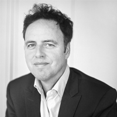
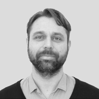
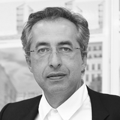
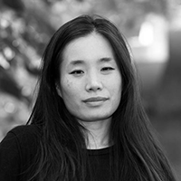
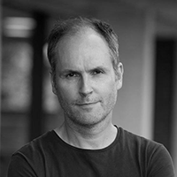
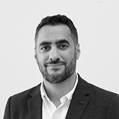

Уважаемые участники Международного архитектурного конкурса "Долина Уюта"!
Мы информируем вас, что дедлайн регистрации на конкурс продлен до 25 октября 2020
года, а прием конкурсных заявок - до 31 октября 2020 года. Объявление победителей состоится 9 ноября 2020 года.
Напоминаем, что конкурсные заявки принимаются только на английском языке.
С уважением, Команда организаторов
Открытый международный конкурс на разработку парка "Долина Уюта"
Конкурс проводится Правительством Мурманской области совместно с АНО "Центр городского развития Мурманской области" и является одним из самых масштабных конкурсных проектов в комплексной работе по благоустройству региона.
Цель
Разработка архитектурной концепции развития парковой зоны Долины Уюта, расположенной по границам улиц Ломоносова, Морской, Лыжного проезда, Кольского проспекта в городе Мурманске, Россия.
Перед участниками стоит задача преобразовать Долину Уюта в знаковое общественное пространство, адаптированное для заполярного климата, а также определить основные векторы развития территории на ближайший период.
Формат
Международный, одноэтапный, открытый.
Конкурс проводится для двух категорий участников: студентов и профессионалов.
К участию приглашаются
российские и зарубежные профессиональные команды со стажем более 3 лет в области архитектуры, проектирования, разработки концепций развития общественных пространств, объектов коммерческой и жилой недвижимости, мастер-планирования.
команды студентов, проходящих на данный момент обучение и/или имеющих стаж работы менее 3 лет. У каждой такой команды допускается наличие научного руководителя.
Максимальное допустимое число участников в одной команде - 5 человек. Одна команда может подать не более одного проекта.
Финалисты
По итогам конкурса будут определены по три победителя и по пять почетных упоминаний в каждой категории: студентов и профессионалов.
Команда, занявшая первое место в категории профессионалов, будет допущена к реализации проекта-победителя.
Конкурсный объект
Проектируемая территория находится на юге Мурманска - крупнейшего в мире города, расположенного за Северным полярным кругом.
Конкурсная зона входит в состав спортивно-рекреационного комплекса «Долина Уюта» и представляет собой парковую территорию площадью 23.38 га.
Восточная часть Долины уюта - это комплекс спортивных сооружений, беговых и лыжных трасс, а также незастроенный лесной массив в Первомайском округе города Мурманска.
Западная часть, в которой находится конкурсная территория - это парковая зона, пролегающая по границам улиц Ломоносова, Морской, Лыжного проезда и Кольского проспекта.
Долина Уюта имеет критически важное значение в последующем развитии городского пространства Мурманска, поскольку является связующим звеном между северной и южной частями города, а также связывает Мурманск с историческим центром Кольского полуострова -
городом-спутником Колой.
Конкурс проходит для двух категорий участников
Студенты
Проходящие обучение в университете или со стажем работы менее трёх лет.
У каждой такой команды допускается наличие научного руководителя.
Профессионалы
Команды профессионалов с рабочим стажем более трёх лет и имеющими высшее профильное образование.
«Coziness valley» park project sets three goals. Firstly, it is necessary to reorganize and renew the shortest footpaths to socially significant objects. Secondly, due to the climatic conditions, this park should represent a comfortable space for both
active leisure and passive recreation in any season. Finally, it is also important to reveal the nature of this place by providing access to all remarkable spots in the park. The relief is used to our advantage
for creating viewing platforms and a network of footpaths with variable altitude for diverse cases, such as an intense workout or a leisurely walk. One can easily walk around the park several times without repeating
the same route twice. Zoning of the area results from the prevailing ecosystem. Forested area near the boarders creates visual and acoustic buffer, while the main walkways form the area for active leisure. The
central part of the park, including areas of extensive greening and a lake valley, creates a space for passive recreation. The characteristic feature of the project is «the Ring» – a promenade with the diameter
of 200 meters, which connects several areas of the park. Its simple form attracts attention and becomes a recognizable symbol. Multi-level structure of the park lets us enjoy picturesque scenery. «Coziness valley»
park reveals the nature of this place and meets the citizens’ requirements by forming a modern and comfortable recreational area. It can become a good example of improvement of non-central city areas, including
the cities with extreme climatic conditions.
The conceptual design of the park was predetermined by its location beyond the Arctic Circle, with a curiosity to see if nature exists beyond the area. With our project, we tried to show the life of Arctic nature in all its diversity, combining all possible
types of plants within the harsh conditions into a single flowing composition. The main design site where the local small reservoir spills in the very centre of the park. The vegetation is especially difficult in
such harsh conditions, so we undertook our design idea in a delicate manner, allowing us to preserve existing plants. At the same time, we retained the ability for the reservoir to overflow during the season, only
framing it with geo-plastic. Aquatic plants are one of the few to withstand low air temperatures due to the fact that the water stays approximately the same temperature in winter. Other species of plants that have
taken root on the Kola Peninsula include various types of mosses and lichens that cover the hills with striking beauty. We cover the hills in the upper part of the composition with lichens. It becomes possible to
plant them if some part of the culture is transported along with the soil, and they will perfectly be able to reproduce in the future under new conditions. The hills in the lower part, we placed plantings typical
for the Murmansk region. It is desirable for the park to become a place of development and some kind of research project, giving local residents the opportunity to interact with nature. In the park, we have located
a small greenhouse with plants from central Russia. It is assumed that the plants from the greenhouse will undergo assimilation in order to be planted in the park. The appearance of the greenhouse brings us back
to the memory of the ancestors of the Kola Peninsula. The shape of the greenhouse is a reference to the storehouse of the local Sami people. The Sami are the oldest inhabitants of the peninsula who also live in
the Scandinavian countries. Reference to this topic is an opportunity to maintain traditions.
We experience our designed landscapes through a series of physical interactions – with each attempting to engage one or more of our senses. We use movement to experience one interaction to another. Our vision for the
coziness valley is to create movement through circulation that connects to a plethora of dynamic spaces. Our inspiration derives from the movement of fishes around Murmansk. The fish travels into the depth of the
water in search of food by night they surface to the top. Within the movement, small air bubbles are formed and expand as they approach the surface. This expansion process is the design drive for Moving Fish Park.
The pathways flow through the park like a swarm of fishes. The infinite loop-like multi-modal pathways are expanding and contracting while providing strong north-south connections, various bubble shaped spaces,
and perimeters of the park. On the north and south edge are promenades. From group gatherings at the local vendors to hosting market events, the promenades are designed for dynamic social interactions in various
sizes. The promenades serve as a transition space from the concrete jungle to the natural environment. Fields of meadow nested with pendulant swinging lights, bend and bow in the direction of the wind – subtly hinting
the sense of movement. The size and scale of each bubble progressively expands towards the center of the park. Each bubble is designed with its own unique form of interactions and programming in different seasons.
The bubbles along the main pathway are active interactions, while the spaces on trail provide passive interactions. At the center is a large open space with a fish pavilion that faces along the existing retrofitted
pond. A connecting boardwalk allows interactions with the naturally filtered water. In winter, the pond freezes into a natural skating area. The lights along the pathways and meadows encourage movement while lights
at the park luminate the space. Our snow strategy is to deposit mound of snow at the turning points along the pathway and the periphery of the bubbles. The Moving Fish Park is a landscape with a perpetual sense
of movement. It allows people to immerse themselves in nature while escaping the concrete world and fostering appreciation towards nature.
The Sami are the indigenous population of Murmansk. Their culture is closely connected with nature and interaction with it; their survival depended on the vagaries of the weather. In the Sami culture, fairy tales take significant place, in which human
interacts with the powerful forces of nature and each object there has a sacred meaning. Ornaments are widespread in the Sami culture, and small bright accents adorn their national clothes. That’s how ornaments
formed the basis of our park spatial strategy; one can always find a cozy human-scale spot or meadow in a vast abundance of surrounding plants. Our cozy meadows are not just a place for rest, but magic artifacts
are also located there. In winter, festivals are held in Murmansk, and people do not hide in their homes. They spend time outside doing active sports and social festivities. Also in winter, in the times of polar
nights, the lighting scenarios in our park become a permanent setting for the city life. Murmansk today is a city of pre-fab panel housing, a kind of a panel paradise with a composition of gray concrete buildings
in a stunning landscape. In our project, we appeal to concrete – the industrial stone of our time. The formwork for the elements of our project will be the soil itself with its natural curvature. Currently,
the park is a territory of some kind of chaos; here one can find a random mix of electrical lines, occasional plants, and streams. To a certain extent, we want to preserve the natural essence of the park and
to force its potential to evolve. We are considering the natural landscape, creating a sustainable biological system to attract animals, and proposing a network of routes to observe and exist in this new system.
The proposal consolidates the trace of the footprints left by the surrounding citizen activity (existing paths, ), showing then the natural program of the surrounding inhabitants, and materializing it in a dynamic interlacing strategy, such as circle
walkway that embrace spaces of different scale and purpose. The circle hold passive and active zone structures, able to activate the neighborhood program, enhancing and creating the conditions needed to generate
new social relationships. The contact area between the ring, in the center of the site, extends the adjacent streets promoting continuity of urban activity and existing landscape. With minimal intervention,
including pedestrian/bike paths, benches, park lights, ice ring, swings, amphitheater and winter playground, area becomes a place of the social interrelation of the neighborhood and will allow different occupations
by the residents throughout the week. The site organization is directed by a simple operation: keeping the existing natural landscape and promoting the new activities. Between terrain and city appears the ‘Coziness
circle’, an iconic structure for the city that act as a point of transition as it mixes terrestrial and urban programs. As a result of the changes, the park reactivates, reconnects and provides a cultural icon
that completes the city fabric. It could be a fresh impression of Coziness Valley.
Cozy Valley Park is currently used as a site of active leisure, nordic walking and skiing, formed by natural clearings and pathways. Our proposal embeds program into and structures natural clearings across the site with the intent of preserving the natural
environment. In the same way that a building can be a collection of rooms, we view the clearings of Cozy valley as a collection of connected public spaces. Therefore, we embed program within the clearings and
along natural pathways to structure experiences alongside and between natural edges. Three buildings are proposed along Morskaya Street, a recreational club house at the corner of Kolsky Avenue, an open air
theatre towards the middle of the site and near a public transport stop, and a residence for visiting athletes and tourists at the corner of Lomonosov Street. The club house features a cafe, restroom and changing
area, flanked by a generous skating rink, and basketball courts. The location at the corner makes the clubhouse and its recreational amenities easily accessible to locals. The open air theatre supports outdoor
film showings and performances, potentially playing host to festivals like Northern Character. This program is located near a public transit stop, intended to attract visitors from the nearby Downtown and neighbouring
communities as well as broader international tourism. The residence for visiting athletes supports the broader athletic park that Coziness Valley is part of. Comprised of a series of translucent enclosures,
with shipping containers retrofitted as apartment pods. The colourful containers are visible to passersby activating the corner of Lomonosov Street with vibrance and activity. The buildings along Morskaya St
are punctuated by playgrounds and spaces that can support pop-up market stalls and cultural performances. These anchoring programs lead visitors into the site to experience nature more intimately, with follies,
look outs, dog parks and recreational programs, scattered throughout the site towards Lyzhny Pass. Pathways are integrated with lighting to support activity during Polar Nights and each programmed Clearing acts
as a beacon along the way. The proposal sees the development of Cozy Valley Park as a collection of public spaces nestled within the existing vegetation, enhanced with strategic plantings to promote further
development of the natural environment and frame the follies and clearings for a broad set of visitors, from local and neighbouring communities to international tourists and athletes.
At present, Murmansk represents a bastion of the Arctic cities. Its strategic importance within the complicated activity in this part of the Northern Hemisphere makes it outline itself as a paradigm of the human colonization. Coziness Valley comprises
natural and coexistence values in search of a comprehensive communication at different levels, as well as a continuous interaction based on the multiplicity of activities being developed in this place. This
proposal searches for the creation of a field of urban intensity that emphasizes the preexisting properties, preserving its identity and, in this way, strengthening the sense of community as a basic preference
of the public space. The intervention conquers the streets. Appropriation begins while walking and discovering the site in experience of emotions, movement and collectivity. Activities break up and generate
tension, bringing together the developed program by promoting receptive and permeable interaction with the environment. The relationship between the atmospheres is nuanced through dynamic interfaces, adaptable
to a dual condition responsible for the skin that covers up, and the natural crust of the land that embraces enormous possibilities of activity, gathering places which generate attraction, and favor a live and
moving social fabric. Cozzines Valley wants to be a meeting point, a sports-culture- and leisure urban diffuser, a warm exchange, a courageous mixture of local activities; vital magnetism continuously inviting
to adoption and use. This proposal, through this place of places, is in search of solving all these visions logically and systematically, but flexibly and organically as well. The main objective of this intervention
is to redefine the habitability of the public area in the so known Arctic world complex reality. We are focused on using the resources in an active way to favor users and the site itself, connecting the city
in multiple scales, compromising the place scale for making it more friendly – a place to go and from which you can always leave to rediscover the city – a place for everyone, open, accessible, a unique experience
that revitalizes the Coziness Valley essence and its beat inside Murmansk.
TEPLO PARK The project represents the answer to the three main challenges of the location: • high level of pollution; • cold and lack of sunlight in the region; • deficiency of vegetation. The answer to all these questions is the idea of the self-regenerating
park, which is able to restore contaminated soil and water. The scientific approach to the territory will help to safe the unique nature. Thanks to careful work with the vegetations the territory will maintain
in a healthy state constantly. The construction of the park is carried out in 4 stages. Stage 1. The entire design site is divided by the coordination grid with a step of 40 by 40 m. All the construction and
work with plantings will follow this grid in the future. Stage 2. Construction of 5 laboratories on the site for the study and reproduction of local fauna in the park. Various scientific and commercial organizations
of the Murmansk region become residents of the laboratories. This step also includes the next characteristics: - The Laboratories are connected by a common path. - The whole territory is divided into clusters
of different sizes. They are located according to the algorithm the main rule of which is the laboratory in the center of the attractor. - Around these laboratories, planting begins. The farther from the laboratory
the plants are planted, the more independent they can be and the less care they need. - The main and only capital building of the park is being built along the eastern side of the site. At this stage, its main
goal is to share current processes and works in the park, recruit volunteers for the work, etc. The Park is also ready to meet the first guests who are interested in the future of the territory. They are access
to some areas but not in the entire territory. Stage 3. There are transit roads are laid throughout the territory. They are slightly raised above ground level and do not harm the plants. The park is completely
open to everyone. Stage 4. The park is filled by "hot spots" which are created not only for a short five-minute rest and heating (hearth, pavilion with a samovar and books, kissing room, etc.) but also for a
longer stay (sauna, cafe with a cauldron, liqueur). Thus, the territory of the entire park is evenly riddled by the heating places, which allows guests to stay outdoors for the most part of the year. The park
is fully operational and allows guests to spend several hours in it. The cluster grid of planting plants, built according to Voronoi's algorithm. It is configured in such a way that the park is in bloom for
the most part of the year. 5 Laboratories are responsible for 5 Zones: • electromagnetic radiation study area • forest study area • river and water study area • marsh study area • soil study area Appropriate
plants are planted around these laboratories. Thus, each part of the park becomes unique. The incredible wealth of flora is achieved at every point of the Park. A huge heating installation "The Sun" is installed
near the southwest entrance to the park. The luminous convex platform warms people who are attracted to it and helps to enjoy the warmth and comfort in a very cold northern city of Murmansk.
Having high-quality public spaces in arctic cities is challenging due to harsh weather conditions. This is Murmansk’s case, where the lack of urban parks, collective spaces and recreational areas make public life difficult for the citizens. Furthermore,
the local environment has witnessed unsustainable extraction of resources that drastically affect the natural elements such as water bodies and green masses. Today, the city of Murmansk needs to turn the situation
around with a new way to propose places which address not only enjoyment activities but local biocomplexity needs. In this way, proposing an open public park becomes the most suitable project to foster new relationships
between residents of Murmansk and its context as a way towards a new sustainability. Park-Lab is a proposal to enable the experiencing of public space as an exploratory lab capable of building relationships between
people and the environment by using the water and its states to conform places to inhabit. Said synergies are the first step towards sustainability, which is portrayed through landscape architecture interventions
throughout the park. Those interventions are connected by a perimeter ring, a meandering circuit and an elevated ring. All three of them aim to visualize all the encounters triggered at Coziness Valley Park. The
landscape interventions are small-scale structures, spaces in which people can connect to, interact with and feel nature through sensory experiences with rainwater collected from the artifacts’ roof. Regarding the
current needs from the local people, the artifacts not only offer a regular walking, jogging and resting program, but also a transversal program focused on communal events along the year, for instance, a place to
observe the northern lights surrounded by a waterfall artifact, a dance performance in a steam artifact, or a soil seed-bank artifact for school activities. Finally, the adaptability of Park-Lab to topography makes
the project part of a replicable public park system for those looking for a suitable business model to offer not only a service or product but an experience for everyone. Just imagine Murmansk, the unique arctic
city that offers high-quality public space that responds to biocomplexity interactions between humans and non-humans.
If you can identify the most specific features of Russia, then undoubtedly the famous Russian cold and the north of Russia will be included into their number. Where does the north of Russia begin? Doubtless from the beautiful city of Murmansk, the warmest
city located beyond the Arctic Circle. The Arctic is unique because the amazing nature of this region is still untouched by the humans. Nature conquers the city. Our project can be divided into two parts: a practical
concept and an artistic concept. The main goals for us were preservation the unique nature and emphasizing its features. Despite the fact, that people consider themselves the only park visitors, this is far from
the reality. After all, the park is home for many species of birds, animals, fish, and insects. We also urge you to pay attention to many plants and trees that create the natural landscape environment of the park.
In our project, we are taking measures to revive, preserve and develop the internal ecosystem of the park, create comfortable conditions for all its inhabitants. We would also like to immerse the park's visitors,
whether they are locals or tourists, in the environment of the north of Russia, which has been embodied in thematic sites such as the “Arctic Circle”, “North lights”, “Bird trail”, etc. scattered on the empty spaces
of the park area. Everyone, from a baby to an old man, will find activities that they would like in the park! Thinking over a practical concept, we proceeded from the truly unique climate of Murmansk: due to white
nights in summer and polar nights in winter, city residents acquire many diseases: physical and psychological. Our suggestion is to make a "health route" which can be followed by every person who is tired of big
city life. During the walk man will relieve stress, clear thoughts by visual, audial or other therapy in park, gain energy from Mother Nature.
The basic concept of our conservation of nature, as well as the dissemination of information about it. That is, the creation of various paths "Pathfinders", where people learn new information about the world around them, flora and fauna of the Murmansk
region. Designing a lecture hall building, where various events can be held in the future, including lectures for children and adults. Creation of different areas for photographing to interest the younger generation
in visiting the park. The park itself will be divided into a quiet and active zone. This was done so that people could choose which type of vacation is closer to them. The quiet zone was created to be closer
to nature and not be distracted by any noisy moments. Therefore, on the territory of a quiet zone, there are places of solitude and rapprochement with nature. In the quiet zone, there are accent points that
facilitate orientation in the park and on which the caffeine pavilions are located. In the active zone we have all the most important things that can be in an amusement park. These are children's and sports
grounds, lecture halls and cafes, equipment rental pavilions and coffee shops, as well as the main promenade. All this contributes to the active life of this territory. For the convenience of the population,
it was decided to add additional stairs, to make a ramp for people with limited mobility. A cycle track is being put into operation, which in the cold season can point under the ski track. In addition, the parking
area is expanding and ennobled. It should also be noted that the main part of the existing landscaping has been preserved and improved, and new plant objects have been added. The streams were widened and planted
with moisture-loving plants in order to reduce the amount of water during floods.
Since ancient times, human beings have been living with fire. Fire has become an object of faith. A means of praying as a natural material that only human beings can handle, which is crucial for life. For people living in the Arctic Circle, which is rich
in nature, we consider that fire that gives warmth in the cold winters and light in the dark winters. This could be a symbol of gratitude for the blessings of nature in their daily lives and also a spiritual
support system. Lighting a fire to show respect while praying for the beautiful nature of the far north, we create a space to experience nature. Through the flames which do not go out all year long, and the
scenery seen from the place, people will rediscover the preciousness of nature. People will grow trees in the park, warm themselves with the fire, and talk with others around it. The people of Murmansk are connected
to each other through a space where they can experience fire and nature.
The park itself is a comfortable recreational area. It is created in a successful compositional concept; we can call it a synthesis of organic and orthogonal architecture. It is much more convenient for people to take walks along natural paths that smoothly
fits the ground relief. They have clear ornamental lines, whereby the "bend + symmetry" formula works. The orthogonal structure compositionally connects the park with the general geometric grid of the city.
The open central part, which is a circular traffic zone, is the main center of attraction for the park in a quiet zone. In fact, it is a counterweight to the entrance node of the group in the north-western part
of the park. In the center there is an amphitheater for cultural and entertainment events. The whole park is an island of tranquility, a zone of silence, protected from the city noise, by means of green spaces.
Due to the location of the power transmission line in the northern part of the park tall plantings are impossible here, since this area is surrounded by streets with car traffic from the north, east and west.
Consequently, this area is the least suitable for quiet relaxation. Because of this, it is connected with the public, business and entertainment areas, by means of an alley running parallel to Kolsky Prospect.
The axis of the alley starts from the entrance, leading from the main prospect and ends on the greenhouse located on the lake shore. The alley is adjoined by noisy public areas and functions - rental, dog owners,
playground, fair and administration. A separate administration building provides reliable control over the lighting of the paths and for maintaining order as well. Potentially it is possible to use the lake
and it's sleeves as ice tracks for skating. The park has a wide variety of tree species - spruce, pine and mixed forests provide a variety of park landscapes. The presence of woodlands in the park will allow
the local fauna to exist and develop comfortably.
Valley of comfort The valley of comfort is life and light in the dark. The territory of the Coziness Valley project is an unkempt forest with a lake. In our project, we looked at both the history and the mythology of this place. The indigenous people
of the Kola Peninsula, the Sami, were taken into account. The project also takes into account the cultural values of Murmansk and the peculiarities of life in the city beyond the Arctic Circle. In Sámi myths,
everything that exists is divided into two opposing parts that come into conflict: the sun and the moon, earth and water, light and shadow, people and spirits of the dead, domestic animals and wild animals.
We take the contrast of opposites as the basis for the concept. This is clearly manifested in the sites that are provided for in the project. The solar greenhouse is contrasted with the lunar Museum active sports
area with calm playgrounds picnic area with baths fairground area with the ice rink. The valley will be active in winter with ski runs, ice rink and sledding. During summer, the park's space is available for
picnics, sports, yoga and small gatherings. People will be able to gather at the large amphitheater in front of the greenhouse and watch concerts in the white nights on the floating stage. The dominant feature
of the park is the greenhouse - one of the main areas by the lake, which will contain a multifunctional pavilion. It will include: a cultural center, a Sami museum, shops, restaurants with dishes from the Murmansk
region, coworking. We tried to preserve and diversify the natural component of the place as much as possible, filling it with the plants of this region, integrating the buildings into the landscape as much as
possible. The new park will become another part of the Murmansk fairy tale.
Being one of the few recreational zones outside the city centre, the Coziness Valley has a significant role for the future development of the urban area in Murmansk as it serves as a link between the northern and southern parts of the city. Currently,
several issues such as the lack of public space, the absence of activities as well as ecological challenges prevent the Valley from promoting the liveability of the urban environment. The project “Loop Park” aims
to reorganise the space into twelve functional zones that are defined as “spatial loops”. These loops are connected through loop-shaped routes that imitate natural pathways and form space for physical activities
and relieving mental stress. The general park composition is formed by a viewing platform – a ramp construction which connects the park to its surroundings, creates an additional dimension and protects the biodiversity
of the lake. The park is designed around four fundamental principles: identity, adaptivity, mobility and sustainability. Overground steam pipes in the west and transmission lines in the north shape the identity
of the park. To emphasise the uniqueness of park identity and to improve the ecological footprint small wind turbines are placed for the microgeneration of electricity. The park’s adaptivity is realised through
a multi-functional design of spatial loops that adapt to weather conditions as well as time. To ensure accessible mobility in the complex topography and during changing weather conditions stairs and steep slopes
were replaced with ramps. Another goal of the park is to sensitise residents to ecological issues and sustainability. Therefore, the educational eco-village was designed. It contains lecture domes, a small farm,
an educational centre, arboretum greenhouses, and a garden that aim to form an eco-friendly society and to enhance residents’ affiliation to nature. Consequently, the “Loop Park” focuses not only on developing a
recreational zone that connects different parts of Murmansk. The project also strengthens the community in the long-term by promoting an active, healthy lifestyle and improves the ecological footprint of the population
beyond the borders of the Coziness Valley.
Жюри
Маркус Аппенцеллер
Архитектор, учредитель и директор архбюро MLA+. (Роттердам, Нидерланды)

Адриан Гёзе
Ландшафтный архитектор, специалист в области градостроительного планирования, профессор, основатель и директор международного архитектурного бюро West 8. (Роттердам, Нидерланды)

Федор Брон
Строительный эксперт, архитектор, ассоциированный партнер бюро MVRDV. (Роттердам, Нидерланды)

Сергей Чобан
Архитектор, член Союза немецких архитекторов, Союза архитекторов России и Союза художников России, создатель архитектурного объединения SPEECH.
(Россия/Германия)
Тарья Нурми
Архитектор, архитектурный критик и писатель, член Финской ассоциации архитекторов.
(Хельсинки, Финляндия)
Татьяна Гук
Директор Института Генплана Москвы, член Союза московских архитекторов. (Москва, Россия)

Лина Чо
Архитектор, основатель и директор объединения Arctic Design Group, приглашенный лектор по направлению ландшафтной архитектуры в Высшей школе дизайна Гарвардского университета (2014), профессор ландшафтной архитектуры в Университете
Вирджинии. (Вирджиния, США)

Мэттью Джулл
Архитектор, геофизик, профессор архитектуры в Университете Вирджинии, основатель и директор объединения Arctic Design Group, занимающегося углубленным изучением проблематики проектирования в арктическом регионе. (Вирджиния,
США)
Сампо Вальюс
Архитектор, член Финской ассоциации архитекторов, вице-президент Финской ассоциации архитекторов (2001-2003). (Оулу, Финляндия)

Мохаммед Маки
Архитектор, исследователь, вычислительный дизайнер. Один из создателей Wallacei - эволюционного движка для Грассхоппер 3D. Со-основатель MSSM Assocites, доцент Сиднейского Технологического Университета.
Частые вопросы
Возможно ли индивидуальное участие в конкурсе?
Да, возможно индивидуальное участие в обеих категориях. При регистрации в анкете заполняется графа только с одним участником, все остальные оставляются пустыми.
Могут ли участвовать в конкурсе иностранцы, или он открыт только для россиян?
Конкурс открыт для жителей и граждан любых стран, без географических ограничений.
Если я студент/наша команда состоит из студентов, но есть необходимый 3-летний опыт работы, возможно ли участие в категории «Профессионалы»?
Да, возможно участие в категории «Профессионалы», если вы сможете при победе или присвоению вашему проекту статуса «Почетное упоминание» доказать наличие необходимого стажа.
Если наша команда состоит и из студентов, и из профессионалов с необходимым опытом работы, в какой категории нам регистрироваться для участия?
В таком случае можно зарегистрироваться в категории «Профессионалы».
На сайте есть только материалы на русском, где можно скачать материалы на английском?
Чтобы скачать материалы на английском, необходимо переключиться на английскую версию сайта. Ссылка на скачивание находится в разделе «Участвовать».
Имеют ли иностранные студенты право участвовать в конкурсе?
Конкурс международный, студенты любой страны архитектурной специальности и смежных областей имеют право участвовать в конкурсе.
Я зарегистрировался, но не получил Код участника. Что мне делать?
Проверьте папку «Спам». Если Кода там не окажется, свяжитесь с организаторами конкурса по следующему адресу competition@gorod51.com и опишите проблему. Мы вышлем Код повторно.
Мы зарегистрировали свою команду, но впоследствии к нам присоединились другие участники. Нужно ли нам регистрироваться заново?
Нет, вы можете отправить информацию о новых участниках по адресу competition@gorod51.com, обязательно указав свой Код участника. Мы добавим высланную вами информацию.
Расширяется ли граница озера или уменьшается в зависимости от подачи воды из двух источников, как указано в вашем плане?
Озеро формируется из талых вод из нескольких ручьёв и его границы показаны условно, оно увеличивается весной и летом, и уменьшается в диаметре зимой.
Возможен ли перенос имеющихся на конкурсной территории теплотрассы и ЛЭП?
Мы рекомендуем не включать подобные масштабные работы в свой проект. Охранная зона для ЛЭП составляет 20 м (подробнее см. ГОСТ 12.1.051-90).
Может ли вода применяться для любого использования?
Да, учитывая все особенности, сезонные деформации и очистку воды, вы можете предусматривать в проекте использование воды, перенаправлять ручьи и так далее.
Вокруг озера есть мелкие болота. Представляет ли «болотная» растительность какую-либо важность для экосистемы и заинтересовано ли общество в ее сохранении?
На данный момент эти зоны не представляют важности для экосистемы парка и не являются охранными, так что использование или сохранение этих зон остается на усмотрение участника.
Должны ли поверхности, окружающие озеро, быть защищены, и если да, то в какой степени?
Территория не имеет охранного статуса.
Возможно ли капитальное строительство на конкурсной территории?
Да, на этом участке земли разрешено строительство. Но не стоит забывать, что в первую очередь это конкурс на проект городского парка, и все капитальные строения, которые вы собираетесь заложить в проект, не должны смещать
фокус с этой функции территории.
При подаче планшеты должны располагаться вертикально или горизонтально?
Судьи будут просматривать планшеты по двум отдельным ссылкам. Таким образом, оценивающий будет открывать сначала первый планшет, затем второй. Оформление планшетов остаётся на усмотрение участника. На финальной выставке
и в публикациях планшеты будут располагаться горизонтально.
Можно ли включить в свою подачу анимационные материалы (видео, GIF-файлы, анимации и т.д.)
Нет, конкурсное предложение должно включать в себя только два планшета в формате PDF не более 10 МБ каждый.
Должно ли конкурсное предложение включать в себя продольное сечение/профили улицы/концептуальные схемы и так далее?
Все графические материалы предоставляются на усмотрение участника. Если вы считаете, что та или иная схема поможет вам наиболее наглядно донести свою идею – добавляйте.
Должно ли конкурсное предложение включать в себя перечень МАФов/поставщиков/укрупненный сметный расчет и так далее?
Это конкурс концептуальных проектов, поэтому организаторы конкурса не требуют от вас настолько подробную информацию.
Каков актуальный бюджет проекта?
Мы не устанавливаем планку. Все будет зависеть от содержания конкурсного предложения, а источники финансирования будут устанавливаться после определения победителя. Концептуальное предложение ляжет в основу инвестиционного
проекта. Конечно, проект должен быть в какой-то степени прагматичным, а экономический эффект должен быть соизмерим с затраченными средствами на реализацию. Укрупненный сметный расчёт прилагается по желанию участника.
Приз за первое место (категория «Профессионалы») и бюджет реализации – это две разные суммы? Входит ли в призовую сумму гонорар за разработку рабочей документации, которую выполнит победитель?
Денежный приз – это награда только за победившее концептуальное предложение. Проектно-сметная документация и разработка рабочих чертежей в эту сумму не входят.
Проектно-сметная документация будет разработана организаторами конкурса? Победитель не будет участвовать в работах по реализации?
Автор проекта-победителя будет привлекаться к разработке рабочей документации и авторскому надзору в любом случае. Формат взаимодействия зависит от юридического статуса победителя. Если это бюро, то с ними напрямую будут
вестись переговоры о заключении договора и выполнении документации под ключ. Если это инициативная группа или один проектировщик, то мы включим его в проектную группу по разработке проекта.